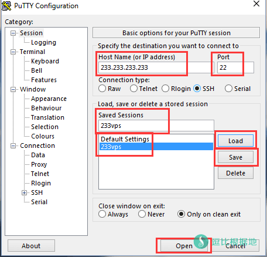
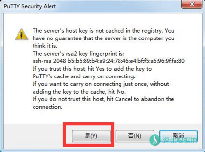
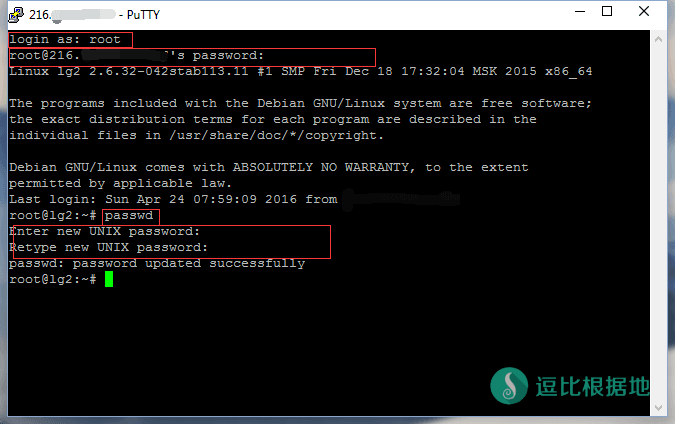

很多没用过linux系统的新手小白，在使用linux的时候就栽在了第一步，链接SSH。很多人都不会使用Putty，总是有人问我。干脆写个详细的教程给你们看吧！
注意：Putty有很多修改版汉化版，但是都被曝出过后门和漏洞，可能会上传你的 IP 端口和 root密码 ，或者在你的VPS中植入肉鸡木马来控制你的VPS为DDOS的肉鸡，所以请下载英文原版的使用！
下载Putty： 逗比云
然后打开 Putty.exe 文件，出现下图。

Host Name(or IP address) 是填你的VPS IP的；
Port 是填你的SSH端口，一般都是默认的22，如果是其他的端口一般会在邮箱或者后台提示；
（非必须学习了解的）下面的Saved Sessions相当于保存服务器，当然只是保存VPS的IP和端口。
先在上面输入IP和端口，然后在图中我输入 233vps 的输入框里输入标签（就是个VPS名称），然后点右边的Save保存；
如果需要修改你要保存的标签，就按Load可以读取这个标签信息，然后就可以修改，再按Save保存。
如果要使用这个标签里的服务器，直接双击标签就链接了。
输入完 IP和端口 就点 Open 链接服务器！
如果是这个电脑第一次链接这个VPS，就会提示你密匙问题，点 是(Y) 就好了！

这时候就会出现下图窗口，会先提示你输入VPS的账号，一般都是用 root 账号(最高管理员)
在 login as：后面输入 root ，然后回车。接着就会提示你输入你的VPS账号(root)的密码。
在 [email protected]你的VPS IP ' s password：后面输入你的root密码，然后回车。
需要注意的是，Linux在任何输入密码的时候，都是不会显示字符的，你看不到你输入的内容，有的人Root密码比较复杂或者怕输错，可以复制密码然后在这里右键粘贴，注意：Putty右键没有win一样的菜单，直接就粘贴了！
你的root密码，一般你在购买VPS通过后会给你发一个含有VPS信息的邮件，同时应该有后台(VPS控制台)一样的地方，找到Root Password字样的就是获取或者修改root密码的地方了！
如果你的Root初始密码不好记，你可以输入 passwd 然后回车，会提示输入新密码，然后再回车，会让你再重复输入一次新密码，在回车就修改成功了！
这时候就可以正常操作Linux了！

转载请超链接注明：逗比根据地 » Linux SSH链接工具 Putty 新手详细使用教程
责任声明：本站一切资源仅用作交流学习，请勿用作商业或违法行为！如造成任何后果，本站概不负责！


你可以用 tcping 来测试端口：Windows 使用 TCPing 工具来获取 TCP延迟、端口通顺情况、已禁Ping服务器的延迟
Ping 通，TCPing 不通，就是被墙。
墙检测到你的服务器可能是代理服务器时，就会TCP回程阻断，可能是封锁单个端口，也可能是22 80以外端口封锁，也可能是全部端口封锁。
你可以用 tcping 来测试端口：Windows 使用 TCPing 工具来获取 TCP延迟、端口通顺情况、已禁Ping服务器的延迟
墙检测到你的服务器可能是代理服务器时，就会TCP回程阻断，可能是封锁单个端口，也可能是22 80以外端口封锁，也可能是全部端口封锁。
你可以用 tcping 来测试端口：Windows 使用 TCPing 工具来获取 TCP延迟、端口通顺情况、已禁Ping服务器的延迟
出现的不是连接超时，而是被拒绝，很有可能是SSH端口错误导致的，因为端口错误而被服务器拒绝。
二是，重装系统。
无论你再怎么确定密码没输错，但是提示这个依然代表密码不正确。
建议使用 Vultr控制面板 重置ROOT密码。